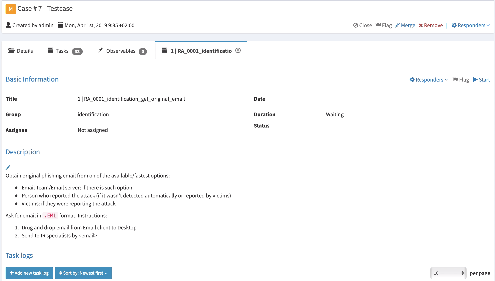

RE&CT¶
The RE&CT Framework is designed for accumulating, describing and categorizing actionable Incident Response techniques.
RE&CT's philosophy is based on the MITRE's ATT&CK framework.
The columns represent Response Stages.
The cells repsresent Response Actions.
The main use cases are:
- Prioritization of Incident Response capabilities development, including skills development, technical measures acquisition/deployment, internal procedures development, etc
- Gap analysis — determine "coverage" of existing Incident Response capabilities
The main resources:
- RE&CT Navigator (modified ATT&CK Navigator) for visualization and observing the big picture
- Automatically generated RE&CT website is the best place for getting details about existing analytics
- Automatically generated Atlassian Confluence knowledge base - exporting functionality demonstration
Response Actions marked by "*" sign are just placeholders, listed to define the way RE&CT will grow.
The links lead to GitHub issues, that you can use to contribute your analytics.
Actionable Analytics¶
The ATC RE&CT project inherits the "Actionable Analytics" paradigm from the ATC project, which means that the analytics are:
- human-readable (
.md) for sharing/using in operations - machine-readable (
.yml) for automatic processing/integrations
Simply saying, the analytics are stored in .yml files, that are automatically converted to .md documents (with jinja) and .json TheHive Case Templates.
For information about customization and usage, please refer to the usage section of the project README.
Response Action¶
Response Action is a description of a specific atomic procedure/task that has to be executed during the Incident Response. It is an initial entity that is used to construct Response Playbooks.
Each Response Action mapped to a specific Response Stage.
The first digit of the Response Action ID reflects a Stage it belongs to:
- 1: Preparation
- 2: Identification
- 3: Containment
- 4: Eradication
- 5: Recovery
- 6: Lessons Learned
The second digit of the Response Action ID reflects a Category it belongs to:
- 0: General
- 1: Network
- 2: Email
- 3: File
- 4: Process
- 5: Configuration
- 6: Identity
This way, using Response Action ID, you can see the Stage and Category it belongs to.
For example, RA2202: Collect an email message is related to Stage 2 (Identification) and Category 2 (Email).
The categorization aims to improve Incident Response process maturity assessment and roadmap development.
Response Playbook¶
Response Playbook is an Incident Response plan, that represents a complete list of procedures/tasks (Response Actions) that has to be executed to respond to a specific threat with optional mapping to the MITRE's ATT&CK or Misinfosec's AMITT frameworks.
Response Playbook could include a description of the workflow, specific conditions/requirements, details on the order of Response Actions execution, or any other relevant information.
TheHive Case Templates¶
TheHive Case Templates are built on top of the Response Playbooks. Each task in a Case Template is a Response Action (with full description).
Here is the example of an imported TheHive Case Template:
Imported TheHive Case Template, made on top of a Response Playbook (click to expand)

One of the Tasks in TheHive Case, made on top of a Response Action (click to expand)

TheHive Case Templates could be found in docs/thehive_templates directory and could be imported to TheHive via its web interface.
Contacts¶
Contributors¶
- Timur Zinniatullin, @zinint
- Daniil Svetlov, @Mr_4nders0n
- Andreas Hunkeler, @Karneades
- Patrick Abraham, @pjabes
- Lucas Berezy, @lberezy
- Efe Erdur, @efeerdur
- Alejandro Ortuno, @aomanzanera
- @d3anp
- Christoph Bott, @xofolowski
Would you like to become one? You are very welcome! Our CONTRIBUTING guideline is a good starting point.
Roadmap¶
The roadmap and related discussions could be found in the project issues by labes:
License¶
See the LICENSE file.